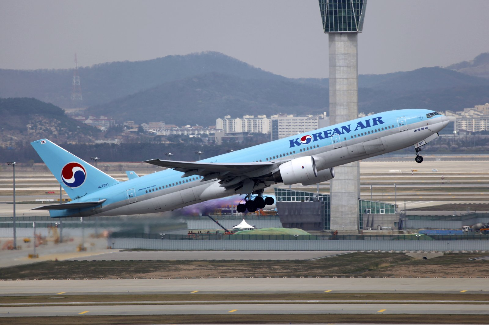
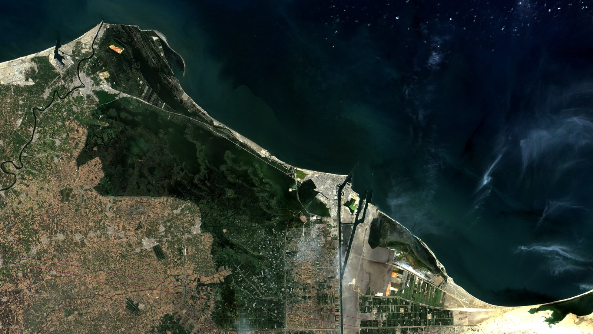

[환황해 철도망②] 바닷길 36일, 철길 11일… 대륙철도는 짐으로 승부한다
서울에서 베이징까지 사람은 비행기로 두 시간… 여객으로는 셈이 서지 않는다
호르무즈와 홍해가 함께 막힌 2026년, 부산에서 로테르담까지 36일
중국-유럽 화물열차 46개월째 적재율 100%, 실린 짐은 자동차부품과 전자·전기 제품
인하대 해양AI융합센터 김갑봉 연구교수(물류학)│대륙철도라고 하면 서울역에서 기차를 타고 베이징을 지나 파리에 내리는 장면부터 떠오른다. 그림은 근사한데 셈이 맞지 않는다. 서울에서 베이징까지 사람은 비행기로 두 시간이면 닿는다. 철도가 항공을 상대로 이길 자리는 사람 쪽이 아니다. 2026년 들어 호르무즈 해협과 홍해가 함께 막히면서 짐 쪽 자리는 오히려 넓어졌다. 대륙철도를 여객으로 보면 계산이 서지 않고, 화물로 보면 계산이 선다.

1. 사람은 두 시간, 철길은 하루
여객에서는 답이 이미 나와 있다. 인천에서 베이징 서우두공항까지 정기편 비행시간은 두 시간 안팎이다. 대한항공과 아시아나항공, 중국 국적 항공사들이 이 구간을 날마다 오간다. 열차가 같은 시간과 같은 값으로 이 승객을 데려올 방법은 없다.
철길 사정은 더 나쁘다. 남북철도공동조사단이 2018년 11월 30일부터 12월 17일까지 북측 구간을 직접 달려 보고 낸 결과보고서를 보면, 경의선 개성~신의주 413.9km 가운데 개성~평양 구간의 운행 속도는 시속 30km, 평양~신의주 구간은 시속 50km 안팎이었다. 노반과 침목이 낡았고 전력 사정도 나빴다. 이 속도라면 개성에서 신의주까지 가는 데만 열 시간 안팎이 걸린다. 서울에서 떠나 국경 두 곳의 통관을 거쳐 베이징에 닿는 시간을 더하면 하루가 지나간다.
같은 보고서는 국제열차가 다니는 평양~단둥 구간만 선로 상태가 양호하다고 적었다. 북측 경의선에서 그나마 성한 구간이 국제열차 노선이라는 뜻이다. 그 나머지를 여객용으로 고치는 데는 셈이 서지 않는다.
2. 두 곳에서 막힌 바닷길
화물 쪽은 사정이 반대다. 2026년 한국 수출길은 바다에서 두 번 막혔다. 미국과 이란의 전면전으로 호르무즈 해협이 마비됐고, 예멘 후티 반군은 홍해 전면 봉쇄에 나섰다. 상하이컨테이너운임지수(SCFI)는 2026년 7월 중순 3184.82를 기록했다. 이는 2024년 1차 홍해 사태 때 고점인 3734에 육박하는 수준이고, 코로나19 이전 평년인 1000선의 세 배가 넘는다.
배는 멀리 돌아간다. 아시아와 유럽을 잇는 선박이 수에즈 운하를 포기하고 아프리카 희망봉으로 우회하면 왕복 운항 일수가 최소 2~3주 늘어난다. 국제 선주단체 발틱국제해운협의회(BIMCO) 집계를 보면 2025년 한 해 수에즈 운하 통항량은 총재화중량톤(DWT) 기준으로 2023년보다 57~64% 적었다. 후티가 공격 중단을 선언한 뒤에도 선박들은 쉽게 돌아오지 않았다.

3. 36일과 11일, 그 사이 25일
시간을 나란히 놓으면 철도의 자리가 드러난다. 스위스 선사 MSC가 2026년 3월 말부터 아시아~북유럽 항로를 개편하며 새로 짠 부산~로테르담 서비스는 36일이 걸린다. 중국 시안에서 독일 뒤스부르크까지 화물열차로 가면 원래 15일이 걸렸다. 출발과 도착 시각을 미리 정해 놓은 전 구간 시각표 열차가 들어서면서 가장 빠른 경우 11일로 줄었다. 중국 국가발전개혁위원회가 2026년 7월 28일 밝힌 수치다.
25일 차이는 단순한 날수가 아니다. 산업통상부 발표를 보면 한국이 2025년 유럽연합(EU)에 판 물건은 701억달러어치로 역대 최대였다. 이 물량이 모두 배로 간다고 놓고 단순히 셈하면 하루치가 1억9000만달러 남짓이고, 25일이면 48억달러어치다. 그만큼의 상품이 창고가 아니라 바다 위에 더 오래 머문다는 뜻이다.
값 차이도 좁혀졌다. 중국국가철로그룹 자료를 보면 중국-유럽 화물열차(CRE, China Railway Express, 中欧班列)의 국내외 운송 가격은 운행 초기보다 40% 넘게 내렸다. 해운보다 빠르고 항공보다 싼 자리가 그만큼 넓어졌다.
4. 화물열차에 실리는 것들
무엇을 싣느냐가 답을 말해 준다. 중국국가철로그룹 자료를 보면 중국-유럽 화물열차가 나르는 화물은 부문 53개, 품목 5만여 종에 이른다. 그중 주력은 자동차와 자동차부품, 기계설비, 전자·전기 제품이다. 유럽에서 중국으로 들어오는 짐은 목재와 펄프, 농축산물, 생활 소비재다. 중국에서 유럽으로 나가는 짐이 값비싸고 시간에 민감한 물건이라는 점이 핵심이다.
효율도 뒤따랐다. 2026년 6월 기준 중국-유럽 화물열차의 적재율은 46개월 연속 100%를 지켰다. 빈 컨테이너를 끌고 다니지 않는다는 뜻이다. 전 구간 시각표 열차는 중국 도시 9곳과 유럽 도시 6곳 사이를 주 22편으로 달리고, 2026년 4월 말까지 누적 1700편을 넘겼다. 이 열차에 실린 컨테이너 한 칸의 화물 가치는 같은 경로의 일반 화물열차보다 41% 높다.
숫자가 말하는 바는 단순하다. 정시에 닿는다는 믿음을 주면 비싼 짐이 모인다. 값이 싸서 모이는 게 아니라 시간을 지켜 줘서 모인다.
5. 한국이 실을 짐도 같다
한국이 내보내는 물건도 성질이 같다. 산업통상부 발표를 보면 2025년 한국 수출은 7097억달러로 사상 처음 7000억달러를 넘었고, 반도체가 22.2% 늘어난 1734억달러로 역대 최대였다. 유럽연합으로 간 701억달러의 양대 품목은 자동차와 선박이고, 그 뒤를 일반기계와 반도체가 따른다. 자동차 수출 720억달러도 관세 탓에 미국행 물량이 줄었는데 유럽연합과 독립국가연합(CIS) 쪽이 늘어 역대 최대를 새로 썼다. 중국-유럽 화물열차가 지금 싣고 달리는 주력 화물이 바로 자동차와 자동차부품이다.
물론 선박은 철도에 실을 수 없다. 그러나 자동차와 부품, 일반기계, 반도체는 사정이 다르다. 짐을 실으려면 화물이 모이는 항만과 산업단지에서 선로가 시작돼야 하고, 1km에 이르는 장대화물열차가 비켜설 대피선이 있어야 하며, 시각표대로 도착하는 화물 운행이 가능해야 한다. 지금 한국 철도에는 이 세 가지가 모두 모자란다. 실을 짐이 없어서 못 싣는 게 아니라 실을 길이 없어서 못 싣는다.
대륙철도를 여객의 낭만으로 보면 논의는 늘 통일 다음으로 밀린다. 화물로 보면 오늘 손볼 목록이 나온다. 셈이 서는 쪽부터 짚는 것이 이 연재가 잡은 출발점이다.
※ 이 기사는 AI 프로그램 클로드를 활용해 작성했습니다.
참고문헌
· "中欧班列累计开行量突破13万列", 신화통신, 2026.7.28., https://www.news.cn/world/20260728/74d1402bb23049d8b4a267a04ae179fc/c.html
· "中欧班列开行突破13万列 发送货值超5200亿美元", 과학기술일보(중국과기망), 2026.5.9., https://www.stdaily.com/web/gdxw/2026-05/09/content_514025.html
· "호르무즈·홍해 '동시 봉쇄' 지정학 리스크 덮쳤다… 韓수출 '물류비 폭탄' 비상", 파이낸셜뉴스, 2026.7.23., https://www.fnnews.com/news/202607220914066586
· "후티 공격 중단 선언에도 수에즈 운하 통항 회복 지연…2026년 초에도 여전히 60% 감소", 해사신문, 2026.1.8., http://www.haesanews.com/news/articleView.html?idxno=144845
· "MSC Enhances Connectivity Between Asia and Northern Europe", MSC, 2026.3.11., https://www.msc.com/en/newsroom/news/2026/march/msc-enhances-connectivity-between-asia-and-northern-europe
· "'부산-로테르담 36일' 스위스 MSC, 북유럽항로 개편", 코리아트랜스라인 물류소식, 2026.4.25., http://www.korea-trans.co.kr/kt0502/1426
· "110년 된 교량 달리는 북 열차, 노후화 심각", 통일뉴스, 2019.3.29., https://www.tongilnews.com/news/articleView.html?idxno=128274
· "2025년 연간 및 12월 수출입 동향", 산업통상부, 2026.1.1., https://eiec.kdi.re.kr/policy/materialView.do?num=275598
· "2025년 연간 및 12월 수출입 동향(원문 첨부)", 쉬핑뉴스넷, 2026.1.1., https://www.shippingnewsnet.com/news/articleView.html?idxno=68435
· "베이징 출발 서울 도착 비행시간과 항공편 스케줄 조회", 트립닷컴, 2026.7. 확인, https://kr.trip.com/hot/베이징+출발+서울+도착+비행시간/
#환황해철도 #대륙철도 #중국유럽화물열차 #호르무즈해협 #홍해봉쇄 #SCFI #경의선 #철도화물 #자동차부품 #고부가가치화물
━━━━━━━━━━━━━━━━━━━━━━━━━━━━━━━━━━━━━━━━
연구용 보관 메모
━━━━━━━━━━━━━━━━━━━━━━━━━━━━━━━━━━━━━━━━
1. 원본 위치
가. 집필 폴더 C:\경세제민연구소\글쓰기&영상\철도\한국철도\대륙철도_환황해\환황해철도\2편_대륙철도의본질은화물_260728\
나. 원본 파일명 환황해철도망_대륙철도의본질은화물_260728.txt
다. 이 파일은 연구 자산 보관용 사본이다. 수정은 집필 폴더 원본에서 하고 다시 복사한다
2. 연재 정보
가. 연재명 환황해 철도망의 현실과 미래. 전 15편
나. 회차 2편
다. 탈고일 2026년 7월 28일. 저장 정비일 2026년 8월 3일
라. 바이라인 인하대 해양AI융합센터 김갑봉 연구교수(물류학)
마. 상태 박사 검토용 초고다. 아직 게재하지 않았다
3. 발행 매체
가. 미정. 게재 확정 시 매체명과 게재일을 여기에 적는다
4. 자기표절 주의사항
가. 이 글은 기사다. 여기 쓴 문장과 표현을 논문에 그대로 옮기지 않는다
나. 겹칠 수 있는 논문 트랙
(1) 논문_환황해_국제철도물류. 중국유럽화물열차와 연안컨테이너 서술이 직접 겹친다
(2) 논문_노선효율성_메타프런티어. 화물 수송분담률과 화물 감소 서술이 겹칠 수 있다
(3) 해양\해양항만연구\논문_열차페리_fsQCA. 환황해 해철 연계 서술이 겹칠 수 있다
다. 겹칠 수 있는 기존 기사 자산
(1) 환황해 철도망 1편 프롤로그
(2) 서해안벨트 인천발 서해선 KTX 6편 대륙편
(3) 임시프로젝트2 문명의 궤도 철도구조개혁 번외편 토대 보고서
라. 논문 작업에 들어가면 위 자산과 대조표를 먼저 만든다
마. 이 글에서 쓴 셈(대EU 수출 701억달러를 25일로 환산한 48억달러)은 기사용 단순 산술이다. 논문에 쓰려면 운송수단별 실제 물동량 분해가 먼저 필요하다
5. 이 편에서 확인한 1차 자료
가. 산업통상부 2025년 연간 및 12월 수출입 동향. 2026년 1월 1일
나. MSC 아시아와 북유럽 항로 개편 공지. 2026년 3월 11일
다. 남북철도공동조사단 경의선과 동해선 북측구간 공동조사 결과보고서. 원문 미확보
라. 상세는 같은 폴더 환황해철도망_2편_참고자료_260728.txt를 본다